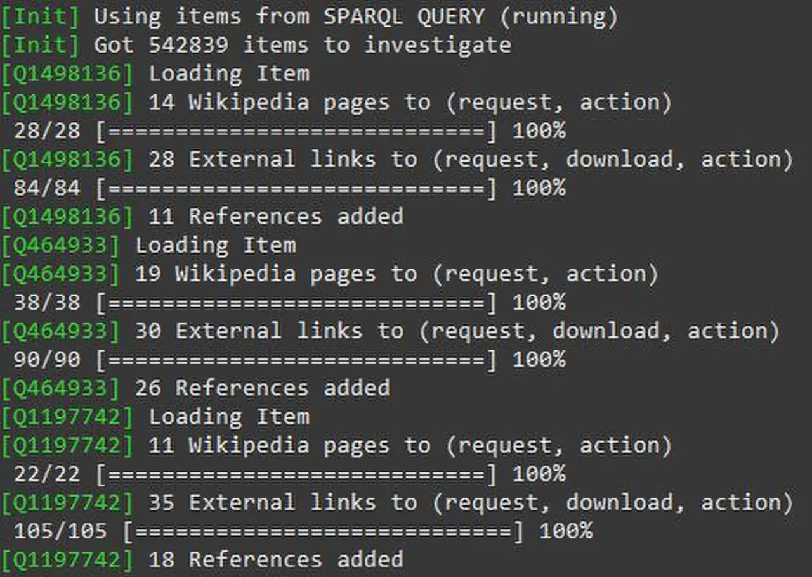

短答
Microdata 把项目和属性标记加到页面上已经存在的 HTML 元素上。
因为字段坐在可见节点上，不一致比单独的脚本更容易看见，改版移动节点时也更容易被破坏。SEO 健康把属性和文字放在一起读。Microdata 不比 JSON-LD 更强，也不是排名格式。它是一种语法。
定义
itemscope 标记一个项目，itemtype 命名它的种类，itemprop 命名一个字段。如果产品名称属性坐在口号的 span 上，该项目的名称就是口号。修复是把属性移到显示名称的元素上，或在模板诚实之前删掉标记。不要维护两套互相矛盾的语法。
这种标记能做什么、不能做什么
把每个属性放在展示该事实的元素上，并且不要再发布一块冲突的 JSON-LD。
图是一个读取标记的工具的终端日志。日志里的计数属于该工具自己的那次运行。它们不是 Mika 或客户的测量。在隐藏元素里塞满 itemprop 值，是一种说出页面没有展示的事情的方式。把它当作虚假主张，和页面从未显示的 JSON-LD 评分一样。一种语法、与可见文字一致，就够了。

要检查什么
- 属性位于展示事实的元素上
- 没有另一种互相矛盾的语法
- 没有隐藏元素携带页面省略的主张
- 一条产品 URL 按 HTML 来读，而不只看验证器摘要
- H1 仍然为人陈述主题
一个结构示例
产品模板把 itemprop="name" 放在站点口号上，又输出名称为 SKU 的 JSON-LD。可见的 H1 是产品系列。修复是只保留 JSON-LD 并使用系列名，去掉 microdata，或者反过来，但不能两者冲突。H1 仍然是给人的陈述。
它不声称什么
Microdata 不保证排名、富结果或引用。
Mika Visibility 把它归到哪里
Mika Visibility 把结构化数据当作技术性的 SEO 健康题目：标记应与可见事实一致，并且能被干净解析。它不出售富媒体结果的位置。GEO 仍然关心实体和证据在正文里是否可理解。重复口号的标记不会制造证据。
日志显示的是软件在读标记。它不改变这条规则：每个属性都要坐在可见事实上。
常见问题
Microdata 把字段放在哪里？
Microdata 把项目和属性标记加到页面上已经存在的 HTML 元素上。
属性应该坐在什么上面？
把每个属性放在展示该事实的元素上，并且不要再发布一块冲突的 JSON-LD。
Microdata 能保证富结果吗？
Microdata 不保证排名、富结果或引用。
下一步
做一次结构化的 SEO + GEO 审计，查看健康发现、增长缺口和可以执行的蓝图。
更清晰的实体、答案、证据和上下文，会让页面更容易被理解与引用。任何回答产品中的结果都不作保证。